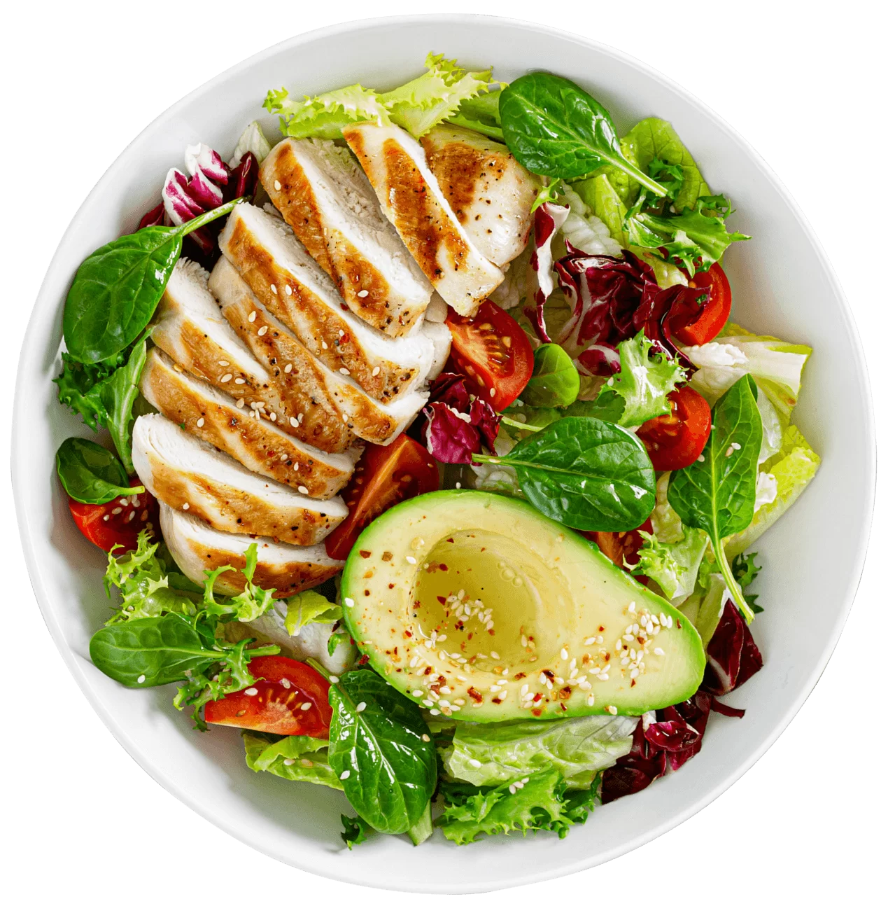

Qual o seu objetivo: emagrecer, ganhar massa magra e/ou mudar a alimentação?
Se um ou mais desses objetivos é o seu, você está no lugar certo! Com o Tecnonutri + Vitat Cuida, as suas chances de alcançar a sua meta de corpo aumentam a cada semana e a garantia de mudança é fato. A gente tem como comprovar:
Uma alimentação saudável não tem a ver com limitações rígidas, com a falta de realismo ou com a privação dos alimentos que você ama. Então, o que é alimentação saudável? A alimentação saudável é um padrão de alimentação que sustenta sua melhor saúde física, mental e emocional. Inclui opções alimentares variadas e equilibradas que atendem às suas necessidades de nutrientes e energia. É sobre se sentir bem, ter mais energia, melhorar sua saúde e melhorar seu humor.

Alcance seu objetivo sem sofrimento
Tenha consultas online com o time de saúde, acesso a listas de compras, cardápios e receitas. Além de aulas ao vivo, conteúdos interativos, grupos com usuários, e diversos programas cuidadosamente pensados para que você atinja os seus objetivos, com diferentes metodologias para descobrir o que se adapta melhor à sua rotina e gostos pessoais.
As metodologias e
programas são elaborados por um time de especialistas focado em tirar seu organismo da estagnação, se alimentando melhor,reprogramando seu corpo para queimar
mais gordura e transformando-a
em massa magra>.

programas são elaborados por um time de especialistas focado em tirar seu organismo da estagnação, se alimentando melhor,reprogramando seu corpo para queimar
mais gordura e transformando-a
em massa magra>.